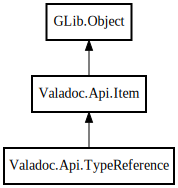

TypeReference
Object Hierarchy:

Description:
public class TypeReference :
Item
A reference to a data type.
Content:
Properties:
- public Item? data_type { set; get; }
The referred data type.
- public bool pass_ownership { private set; get; }
- public bool is_owned { get; }
Specifies that the expression is owned.
- public bool is_weak { get; }
Specifies that the expression is weak.
- public bool is_unowned { get; }
Specifies that the expression is unwoned.
- public bool is_dynamic { private set; get; }
Specifies that the expression is dynamic.
- public bool is_nullable { private set; get; }
Specifies that the expression may be null.
Creation methods:
- public TypeReference (Item parent, Ownership ownership, bool pass_ownership, bool is_dynamic, bool is_nullable, string? dbus_type_signature, void* data)
Methods:
Fields:
Inherited Members:
All known members inherited from class Valadoc.Api.Item
All known members inherited from class GLib.Object
- interface_find_property
- interface_install_property
- interface_list_properties
- @new
- new_valist
- newv
- new_with_properties
- add_toggle_ref
- add_weak_pointer
- bind_property
- connect
- constructed
- disconnect
- dispose
- dup_data
- dup_qdata
- force_floating
- freeze_notify
- @get
- get_class
- get_data
- get_property
- get_qdata
- get_type
- getv
- is_floating
- notify_property
- @ref
- ref_sink
- replace_data
- replace_qdata
- remove_toggle_ref
- remove_weak_pointer
- @set
- set_data
- set_data_full
- set_property
- set_qdata
- set_qdata_full
- set_valist
- setv
- steal_data
- steal_qdata
- thaw_notify
- unref
- watch_closure
- weak_ref
- weak_unref
- notify
- ref_count